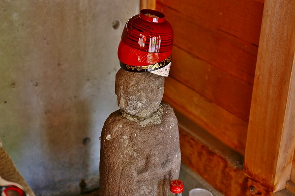
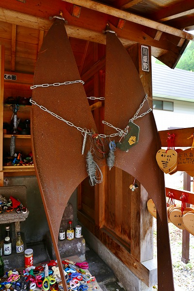
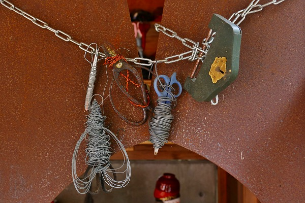
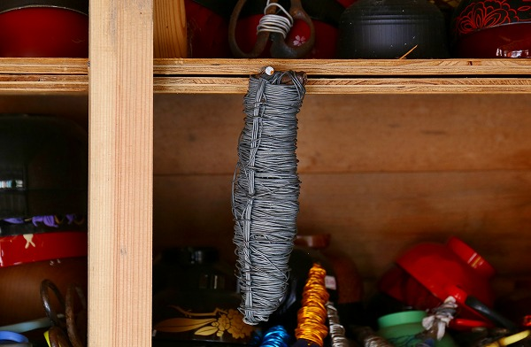

福島県の
檜枝岐村。
福島県の最南西部に位置し、群馬県と新潟県に隣接する所謂奥会津と呼ばれる地域だ。
あの辺の地理に詳しくない人にとってはイメージすることすら困難な場所だが、どうしても知りたい方は各々調べてください。
この檜枝岐村には古くから
農村歌舞伎が行われている。
270年以上の歴史を誇る歌舞伎で、多くの人々がこの歌舞伎を見るために檜枝岐を訪れるという。
なるほど。舞台に比べて客席のひな壇の数が凄い。
この村の歌舞伎の人気ぶりが伺える。
…と、ここまではいつもの前口上でございます。
村歌舞伎へと向かう小道にはたくさんの幟が並んでいる。
その小道の一画、小さな橋のたもとに小さな祠がある。
コレが今回紹介する
橋場のばんばである。
中を覗いてみてみると…
こんな感じです。
左右に巨大な糸切り鋏。
その先には
鋏ハサミはさみ…。
中央には女性の石像がある。
これが橋場のばんばである。
ばんばとはつまり
姥神で、奪衣婆によく似た神様の事だ。
特に会津から奥会津地方ではこの姥神の信仰は盛んで地元ではあんばさまとかおんばさまと呼ばれている。
頭の上のお椀が気になって仕方がない方もいらっしゃるでしょうからソコ言及しましょう。
このばんばの石像の頭の上にお椀を被せるとどんな願いもかなうそうな。

隣にいるお地蔵さんにまでお椀が被せられている。
お地蔵さん的にはとんだとばっちりであろう。
この頭にお椀を乗せる習俗は東北各地にあるようで、実際私も秋田県などで見たことがある。
それ以上に気になるのはやはり
大量に奉納されたハサミだ。
大量のハサミがこれでもかと言うほど積み上げられている。
針金や紐でグルグル巻きにされたハサミに目が釘付け。
これらはこのお堂の中の右サイドに置かれている。
先程の入口にあった大きな糸切り鋏を思い出してほしい。
左側は綺麗な鋏で

右側は錆びた鋏。
つまりこの橋場のばんばは
縁切りと縁結びに御利益がある神様だったのだ。
縁切りを願う人は左側に普通のハサミを奉納する。
一方、縁結びを願う人は右側に紐や針金でグルグル巻きにしたハサミを奉納する、という塩梅なのだ。

錆びた方の巨大糸切り鋏には鎖が巻き付けられ、おまけに南京錠までかけられている。
念の入れようが凄い！
ハサミ奉納自体は他の寺社でもたまに見かけるが、
ここまでガッチガチに針金を巻き付けて奉納しているところはないと思う。
昔は錆びたハサミや刃こぼれしたハサミを奉納したというが、最近のハサミってステンレス製が多くてそういうのないじゃないですか？
なのでこのようなグルグル巻きのハサミを奉納してる、という訳。
ある意味
道具の性能が進化したことによって奉納習俗が変化した好例といえよう。

このハサミなんて持ち手までグルグル巻きにされていて針金で出来た
ミノムシみたいになっちゃってますよ。
そのあまりにも真剣な勢いに圧倒された。
そこで、ふと気付いたのだが…
縁結びと縁切りの奉納習俗ってこれまであちこちで観てきましたよね？皆さんもこのサイトで色々観てきたでしょ？
過去の傾向からすると縁結びに比べて縁切りの方が情念高め、というか見ててげっそりするのは縁切りの方でしたよね。
ところがここはどうですか？
明らかに
縁結び祈願の方が情念度数が高くないすか？
もちろんそれは何の手も加えない普通のハサミとグルグル巻きのハサミが並んでいるからそう思うのだろう。
でも正直、このハサミを見た瞬間、グルグル巻きの方が縁切り祈願だと思いましたもの、直感で。
頭では理解できても、未だに腑に落ちない感じがするのは何なんでしょうねえ。
お堂の脇には絵馬が掲げられていた。
この絵馬も縁結び、縁切りと左右に分かれていて縁結び祈願の絵馬はハート型のよくある絵馬なのだが…
縁切り祈願の絵馬の方は真ん中に割れ目が入っていて、願いを書いた後、バキッと半分に割って奉納するのだという。
こんな縁結びの祈願もあるんだなあ。切なすぎるぜ。
ところで、この橋場のばんば、水難除けの神様でもあるという。
そもそもこの地方の姥神信仰は子宝祈願の神様なはずなのに、何故橋場のばんばだけが水難除けの神様でもあり、縁結びの神様でもあり、縁切りの神様であるのか？
その答えは拙著「奉納百景」でかなり斬新な視点で述べているのでそちらを参照していただきたい（買ってね♡）。